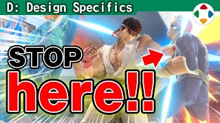
速览
「具体设计」分类谈游戏中各种机制的思路；与「企划与游戏设计」的界线很模糊，但更偏向与电脑打交道的内容。本期很重要：命中停顿（hit stop）是一种规格，指例如攻击对手时短暂停住的时间；有没有它，手感完全不同。《大乱斗 特别版》的终结演出也可说是其延伸，但更接近「Boss 停顿」——樱井自己在规格上起的名词：打倒 Boss 时作为演出停住。其实从 FC《星之卡比 梦之泉物语》就已实装：打倒 Boss 的瞬间画面闪光并停住，这对获得充分手感非常重要；卡比被打倒时也会暂停。这么重要的命中停顿，樱井认为不论类型都该到处加。例如玩射击游戏时，常常不知不觉就被打倒了，第一反应是「咦？」——明明是看点，玩家感想却是「咦，刚才是什么？」，太亏了。1986 年的《Fantasy Zone》在被弹的瞬间画面会停一下，只是停，不算华丽，但嵌进自机的子弹清楚可见，「糟了」的感觉增强——这种东西一定要有。《Fantasy Zone》借鉴了很多 1980 年《Defender》的规格；看它的被弹画面，作为演出已经发生了停顿。当时北美游戏似乎常见这类演出。不只停顿，还能想各种演出：在射击游戏中依次叠加「停顿」「停顿 + 震动」「停顿 + 震动 + 慢动作」看看。在关键时刻好好停住，演出打倒或被打倒的手感吧——这相对容易实现。
1. 什么是命中停顿 0:22
「具体设计」分类会谈游戏中各种机制的思考方式。它与「企划与游戏设计」分类的界线很模糊，但请理解为更偏向「与电脑打交道」的内容。
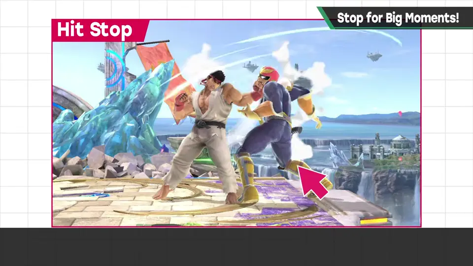
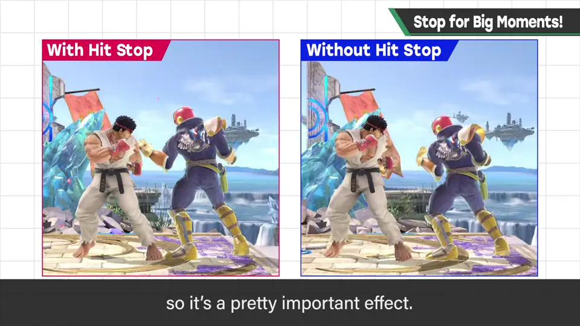
2. Boss 停顿 1:02
《大乱斗 特别版》的终结演出也可说是它的延伸，但更接近「Boss 停顿」——这是樱井自己在规格上起的名字：打倒 Boss 时作为演出而停住。
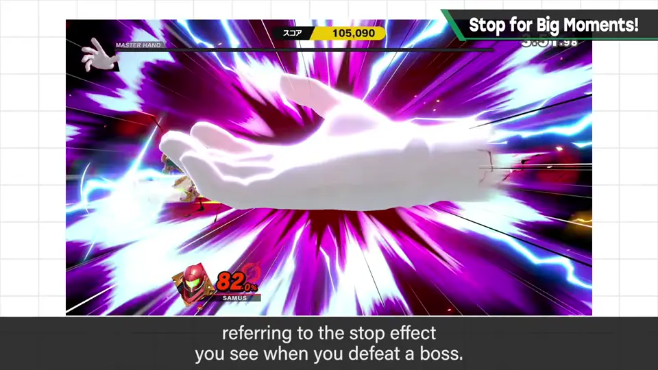
其实从 FC《星之卡比 梦之泉物语》就已经实装了：打倒 Boss 的瞬间画面闪光并停住。这对获得充分的手感非常重要。卡比被打倒时也会暂停。
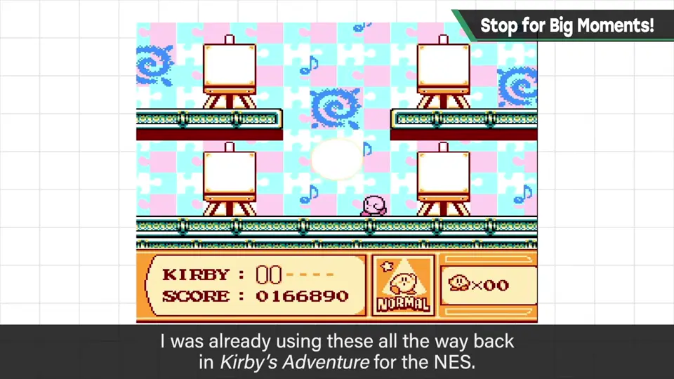
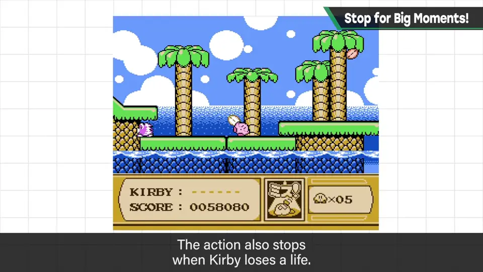
3. 射击游戏也该停一下 1:46
这么重要的命中停顿，樱井认为不论类型都该到处加。例如玩射击游戏时，常常不知不觉就被打倒了，第一反应是「咦？」。好不容易的看点，玩家感想却是「咦？刚才那是？」，太亏了。
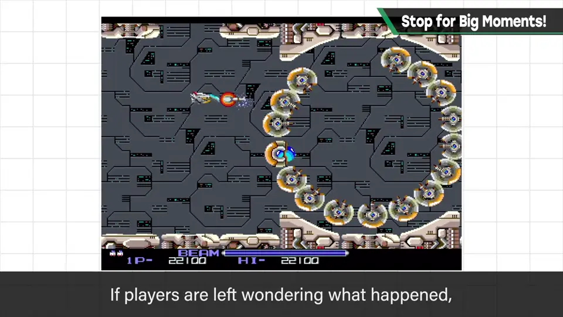
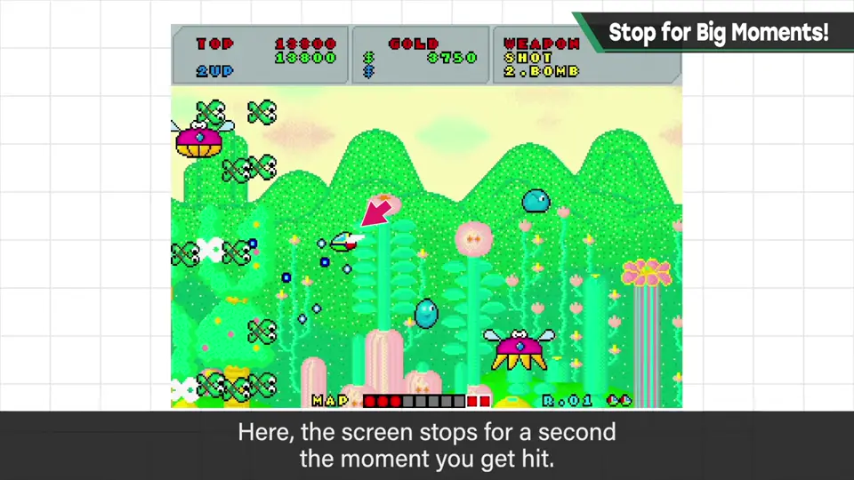
1986 年的《Fantasy Zone》，在被弹的瞬间画面会停一下。只是停住，不算华丽，但能清楚看到嵌进自机的子弹，「糟了」的感觉增强——这种东西一定要有。
其实《Fantasy Zone》沿袭了不少 1980 年《Defender》的规格。看它的被弹画面，作为演出已经发生了停顿。当时北美游戏似乎常见这类演出。
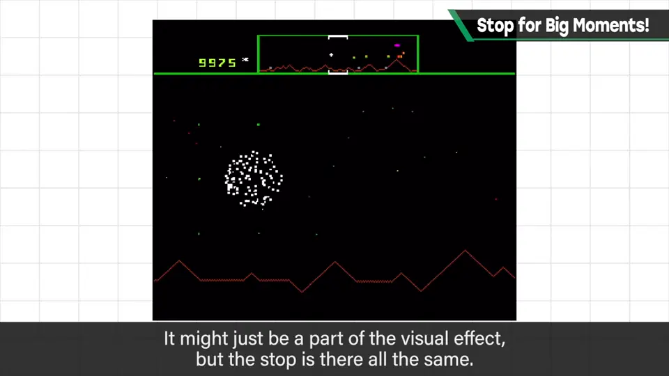
4. 停顿 + 震动 + 慢动作 3:07
不只停顿，还可以想各种演出。在射击游戏中把它们一层层叠加看看：无效果 → 停顿 → 停顿 + 震动 → 停顿 + 震动 + 慢动作。
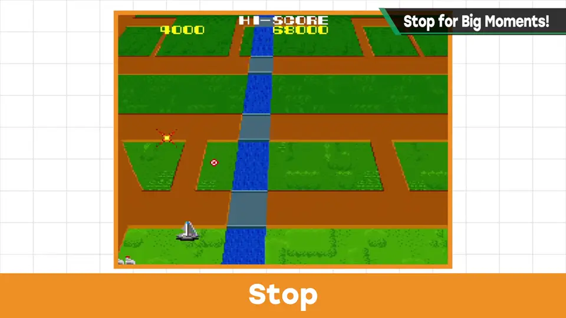
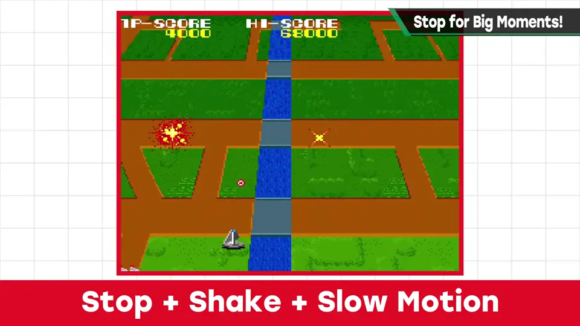
自测题
1. 什么是命中停顿？
攻击命中时短暂停住的时间；有无它手感完全不同。 0:33
2. 什么是樱井说的「Boss 停顿」？从哪部作品开始？
打倒 Boss 时作为演出停住画面；从 FC《星之卡比 梦之泉物语》就已实装。 1:02
3. 为什么射击游戏被弹时也该停顿？
否则玩家常不知不觉被打倒只觉得「咦？」；停住能让人看清子弹、增强「糟了」的手感（如《Fantasy Zone》）。 1:46